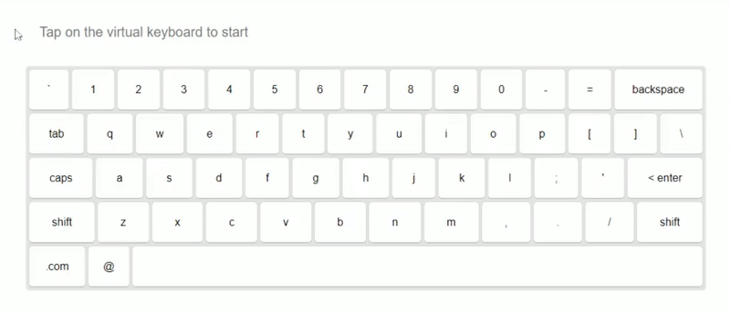

Welcome to the evaluation study for my custom text entry technique. This study explores the efficiency and ease of use of a swipe-based interaction method using an on-screen keyboard, compared to traditional QWERTY keyboard. You will be asked to complete a series of phrases using this custom swipe keyboard. The study should take approximately 10 minutes to complete.
In this study, you will use a custom swipe-based keyboard to enter text. Instead of tapping individual keys, you will glide the brush across letters to input characters. Keys are selected through brief hovers and movement patterns, with visual feedback provided through a glowing trail. This method aims to offer a fluid, hands-free alternative to traditional typing.
The example below will help you get familiar with how this text entry technique works. In the following trials, you’ll be prompted with random phrases to enter using the swipe-based keyboard. We’ll measure typing speed, accuracy, and overall efficiency to evaluate how this method compares to traditional keyboard input.
